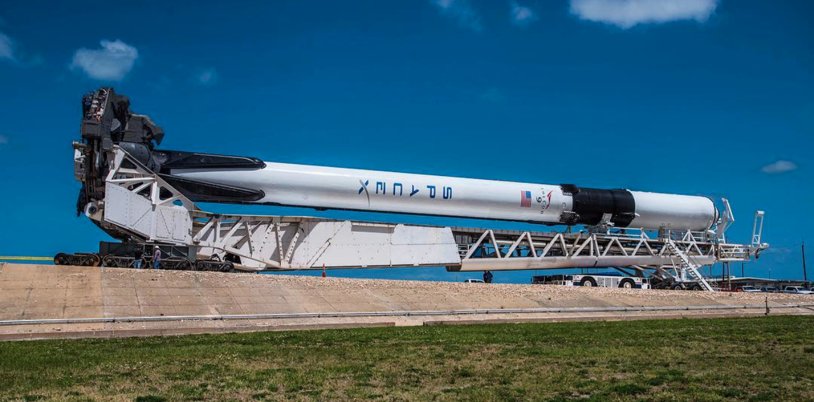

IBM: Applied Data Science Capstone
Introduction
The commercial space age has arrived, companies are working towards making space travel affordable for everyone. Virgin Galactic is providing suborbital space flights. Rocket Lab is a small satellite provider. Blue Origin manufactures sub-orbital and orbital reusable rockets. The most successful is SpaceX. SpaceX has been able to accomplish the following, sending a spacecraft to the International Space Station. Starlink, a satellite internet constellation providing satellite internet access, and sending manned missions to space.
SpaceX is able to accomplish this because rocket launches are relatively inexpensive. SpaceX advertises Falcon 9 rocket launches on its website at a cost of $62m, other providers cost upwards of $165m for each rocket launch. SpaceX are able to save due to their ability to reuse their first stage. Therefore, if you can determine if a first stage will land, the cost of launch can be determined.
The rocket payload is enclosed in the fairings. Stage two, helps bring the payload to orbit but most of the work is done by Stage 1. Stage 1 is much larger than stage 2 and is quite expensive. Unlike other rocket providers, SpaceX’s Falcon 9 can recover the first stage.
This project aims to provide information to billionaire industrialist Allon Musk, who is the founder of a competing rocket company SpaceY. The aim is to determine the price of each launch and determine if SpaceX will reuse the first stage. Instead of using rocket science, a machine learning model will be trained on publicly available information to predict if SpaceX will reuse the first stage. This information can be used if an alternate company wants to bid against SpaceX for a rocket launch.
Data
The data used in this capstone will be gathered from the SpaceX REST API. This API gives us information about the following:
Data Sources
This section of the task involved using web scraping to collect Falcon 9 historical launch records from a wikipedia page title “List of Falcon 9 and Falcon Heavy Launches” - https://en.wikipedia.org/wiki/List_of_Falcon\_9\_and_Falcon_Heavy_launches. The web scraping used the requests and beautifulSoup python modules to extract the launch records from HTML tables in Wikipedia and then parse the table and convert it into a pandas data frame.
Methodology
Libraries Used
Several libraries were used in this project, the main ones being pandas and numpy for the data storage and manipulation. Requests was used to make HTTP requests to get data from the SpaceX API.
Data Source Collection
SpaceX Rocket Launch Data
In order to get data from SpaceX’s API, the Requests library was used to collect data from the SpaceX API. A GET request was used to request and parse the SpaceX launch data. This data was then stored in a pandas dataframe.
The data frame was then cleaned to get it into a format that could be used for further analysis with the help of some data wrangling. This included dealing with rows that had missing values. The mean of the payload mass column was used to replace the missing values in that column.
Data Wrangling
In the data set, there are different cases where the booster did not land successfully - for example True Ocean meant the mission was successfully landed to a specific region of the ocean. False Ocean means the mission was unsuccessfully landed to a specific region of the ocean. True RTLS meant the mission successfully landed on a ground pad. False RTLS meant the mission was unsuccessfully landed on a ground pad. A landing outcome label was created from these outcomes into training labels where 1 meant the booster successfully landed and 0 meant it was not successfully landed
The first task of EDA was to calculate the number of launches on each site. The data contained several launch facilities: Cape Canaveral Space Launch Complex, Vandenberg Air Force Base Space Launch Complex, Kennedy Space Centre Launch Complex. Each launch aims for a dedicated orbit.
The orbits types included the following:
LEO: Low Earth Orbit is an Earth-centred orbit with an altitude of 2000km or less (approximately one-third of the radius of the Earth), or with at least 11.25 periods per day (an orbital period of 128 minutes or less) and an eccentricity less than 0.25. Most of the manmade objects in outer space are in LEO [1].
MEO: Geocentric orbits ranging in altitude from 2000km to just below geosynchronous orbit at 35786km. It is also known as an intermediate circular orbit. These are ‘’most commonly at 20200km or 20650 km, with an orbital period of 12 hours. [2]
GEO: Is a circular geosynchronus orbit 35786km above Earth’s equator and following the direction of the Earth’s rotation. [3]
HEO: Geocentric orbits above the altitude of geosynchronous orbit. [4]
The next tasks were to calculate the number and occurrence of each orbit. Then to calculate the number and occurrence of mission outcome per orbit type. The last task was to create a landing outcome label using the information of the mission outcome.
Exploratory Data Analysis and Feature Engineering
In this stage of the capstone, the goal was to predict if the Falcon 9 first stage would land successfully. This would involve performing exploratory data analysis and feature engineering using Pandas, Numpy, and matplotlib libraries. The SpaceX dataset was read into a Pandas dataframe from a csv file. The first step of the EDA was to see how the FlightNumber and Payload variables would affect the launch outcome. This was accomplished by creating a scatter plot of FlightNumber (independent) vs. PayloadMass (dependent) and overlaying the outcome of the launch.
From the resulting plot, it is evident that the payload mass is an important variable as the bigger the payload mass, the less likely that the first stage will land.
The next task was to visualise the relationship between FlightNumber and Launch Site. A scatterplot was also used to visualise the relationship between these variables - FlightNumber (independent) and Launch Site (dependent) with the result of each launch used to differentiate each data point on the graph.
From the resulting plot, CCAFS SLC 40 was the most frequently used launchSite- the majority of its first 30 flights were not successful but the later flights were mostly successful. There were 55 flights from this site with a success rate of 40%. VAFB SLC 4E had 13 flights with a success rate of approximately 76%. KSC LC 39E had 21 flights with a success rate of 76% as well.
The next step was to check if payload had an effect on each flight at the different launch sites. A scatterplot was used to visualise the relationship between the launchsite and payload mass variables with the outcome of the launch used to differentiate the data points.
From the figure, There is a relationship between weight and the success of a rocket launch. That is, for each launchsite we can say that as the payload gets larger we have more successful launches. However, with payloads below ~7000kg, there is no relationship observed for launch site CCAFS SLC 40. For the KSC LC 39A launch site, we see that the payload range from ~5500kg to ~7000kg had the most number of unsuccessful flights.
The next task was to investigate the success rate of each orbit type and a bar chart graph was used to accomplish this. The mean of the outcome for each launch for each orbit type was calculated to be used in the bar chart.
From the figure, ES-L1, GEO, HEO, SSO, and VLEO had the most success rate. The next task was to visualise the relationship between FlightNumber and Orbit type. This was done using a scatter plot. THe LEO orbit there seems to be a relationship between the flight number and success rate. There is no other discernible relationship at the other orbits.
The next task was to visualise the launch success yearly trend and this was done using a line chart with year (independent) and average success rate (dependent).
From the figure, we can see that for the first 3 years between 2010 -2013, SpaceX had a 0% success rate for Falcon 9 flights. There was a sharp increase from 2013 till 2014 where the success rate stayed constant at 40% till 2015. This was then followed by sharp increases and decreases till 2019. Since 2019, the success rate has dropped.
Feature Engineering
Through the EDA above we have obtained preliminary insights into which variables are important and affect the success rate of each launch. These variables will be used as features to assist in successful prediction of launch outcomes.
The pandas method get_dummies will be applied to the features dataframe above for one-hot encoding on the columns Orbits, LaunchSite, LandingPad, and Serial.
The last step of the feature engineering will be to change all the numeric columns to variable type float64.
Interactive Visual Analytics and Dashboard
The goal of this section of the capstone project was to build a dashboard to analyse launch records interactively with Plotly Dash. After completing this, an interactive map was built to analyse launch site proximity using Folium.
The dashboard was used to answer the following 5 questions:
The success rate of a launch may depend on many factors such as payload mass, orbit type, location, and proximity of a launch site i.e initial position of rocket trajectory. Location can be a predictor for determing launch success.
The interactive map was used to visualise the success rate of flights from each launch site. Folium markers were created using a MarkerCluster object to mark the success/failed launches for each launch site. The folium interactive map was used to calculate the landmarks in close proximity to each launch site.
Predictive Analysis (Classification)
Machine learning was used to determine if the first stage of Falcon 9 will land successfully. This involved preprocessing the data which allowed us to standardise the data and split into training and test sets. Then different classification models were trained and grid search will be used to get the best hyperparameters that will allow a given algorithm to perform the best. The hyperparameter values were used to determine the model with the best accuracy using the training data. Logistic Regression, Support Vector Machines, Decision Tree Classifier, and K-nearest neighbours were used. The output of this was a confusion matrix.
The data was standardised using the preprocessing module in sklearn. The data was split into train and test sets. The training set was further divided into a validation data set. The models were then trained and hyperparameters were then selected.
Logistic Regression
A logistic regression object was created using the sklearn model and a GridSearchCV object was used to find the best hyperparameters to get the best accuracy possible from the logistic regression algorithm. The accuracy of this model was then evaluated using the test data. A confusion matrix was then ploted to visualise the accuracy of the model.
The four models used all achieved an accuracy score of ~83% hence no ‘best’ method could be decided on. The reason for this could be due to the limited size of the available datasets used in the expereiments. There werer only 90 instances in the dataset.